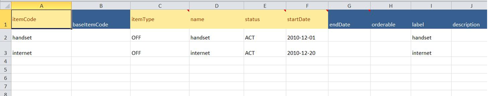
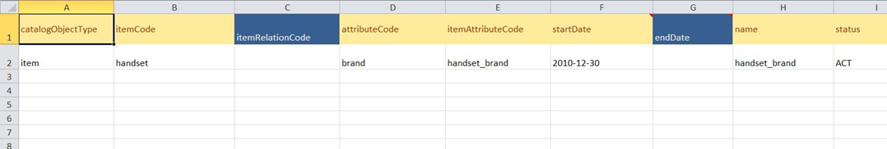

The import and export functions allow you to transfer catalog data between different environments. You can export catalog data to an XML file, which you can open in Excel and view it as a spreadsheet. Additionally, you can add data to this Excel spreadsheet XML file, and then import it to the catalog database.
Catalog provides a template file for importing and exporting data in XML. You can access this template file in Velocity Studio by doing the following:
The Excel-compatible XML file contains a set of sheets where each sheet represents a catalog object or association. Within a sheet, the columns provide the definition of the object or association. Every row represents a different object or association.
The following sample spreadsheet represents sample data used to define an item in the catalog. The first row in the sheet lists the properties of the item. The next two rows reflect two items:

If any of the cells expect input in a specific format, the column header provides this information in the form of a comment.
When exporting, all catalog objects are exported one at a time into the XML file. Eventually, all data from all catalog tables are placed in this file.
You can fully import data from a formatted XML file into a catalog database. The relationship between all data is also established according to the sheets in the XML.
The following image gives an example of creating an item attribute association. This association is used to link an item object with an attribute object. In this example, handset has been defined in the itemCode column and the attribute refers to brand in the attributeCode column.

Similar to the previous example, all relations of the Catalog data can be indicated in this manner. When inputting data into the XML spreadsheet, all relations must be well considered.
During the import process, if the object already exists in the catalog, it is updated. If the object does not exist, it is created.Catalog also provides the ability to perform an object-specific import or export. Instead of importing or exporting all data contained in the catalog, you can perform these operations on an item, project, or hierarchy. When you perform an export at the object level, only data related to the object, including the definition, associations, and dependent objects are exported.
Similarly, instead of placing all catalog data in one XML file and inputting it into the database, you can choose to put data only related to one item, project, or hierarchy in an XML file, and then importing it.